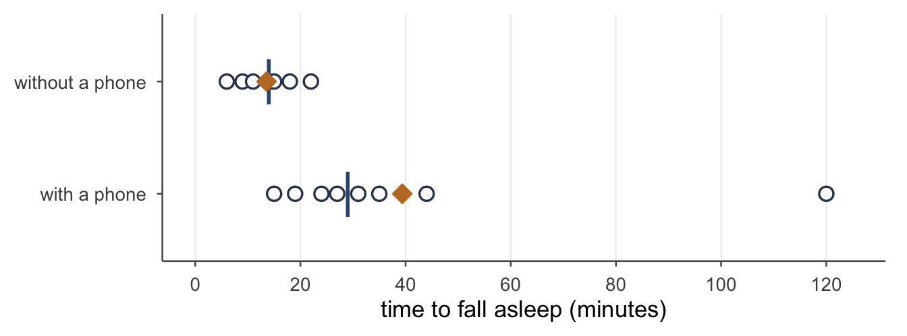
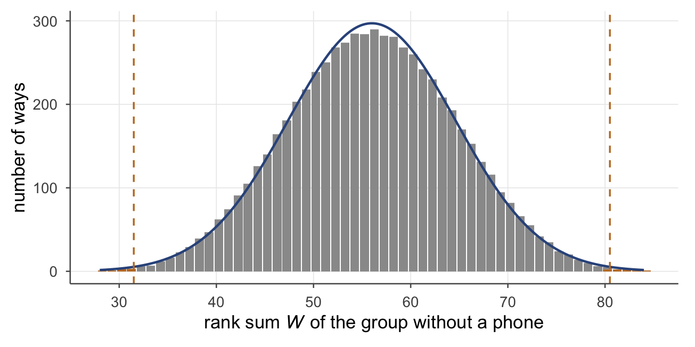
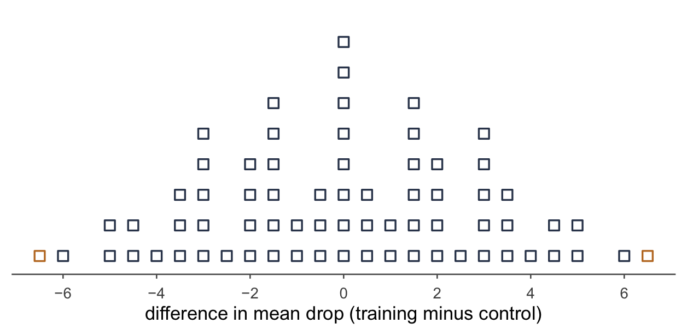
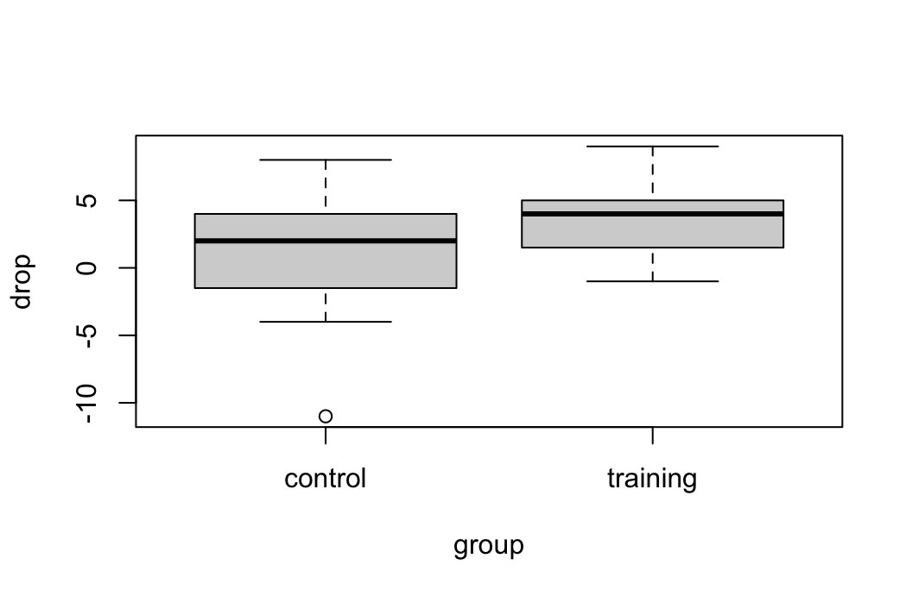
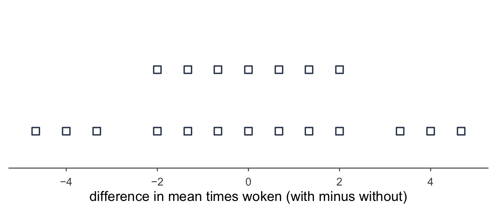

when you may use the bell, and what you do when you may not
Towards morning the whole wood was asleep.
Everyone had fallen asleep within 45 minutes, except the moth, with his phone in bed: he took 120 minutes.
“He’s spoiling my average,” said the bat, “I’m leaving him out.”
“Your average is an animal that doesn’t exist,” said the dormouse, “and he does exist.”
“And if I count him out,” the bat said at last, “he won’t have lain awake a minute less.”
He put them in a row, from early to late, with the moth at the back: not as 120 minutes but as the last one, however late that was.
What you learn this week
when you may use the bell of the z-test and the t-test
checking by eye whether your scores are skewed
transforming: pulling in a long tail with a log or a square root
working with ranks, also when two scores are equal
the Wilcoxon rank-sum test, for two independent groups
the Wilcoxon signed-rank test, for two paired measurements
the effect size r for both
what a permutation test does: understanding it, not running it yourself
in R: wilcox.test() and median()
When may you use the bell?
Since week 2 (Hypothesis tests for one mean) you haven’t been counting dots. You read your p-value off a smooth, symmetrical bell: the normal distribution for the z-test, the t-distribution for the t-test. That saves a lot of counting. But that bell is a promise, and a promise comes with conditions. Those conditions are called assumptions: things that have to hold, or the p-value is wrong.
Every test with a bell you have done so far asks for two.
Independent observations. Everyone is in the sample once, and nobody influences anyone else’s score. Children from the same class, participants who talk to each other during the study: then this condition no longer holds. For a paired test it applies to the pairs: each pair stands apart from the other pairs.
A sampling distribution that really is a bell. That is the case if the scores in the population are normally distributed. Or if your sample is big enough: then the means fall into a bell by themselves, even when the individual scores are skewed. That is the central limit theorem from week 2. In an exam this condition is called the assumption of normality.
How big is big enough? There is no fixed number for that. The more skewed the scores, the bigger the sample has to be before the means settle neatly into a bell.
With two independent groups there is traditionally one more: equal variances in both groups. The Welch version of the t-test, which R uses by default, doesn’t need it.
If the second condition doesn’t hold (the assumption is then violated), you’re stuck. The bell is then the wrong shape, and what the right shape is, you don’t know. No shape, no p-value.
TipRing the doorbell, or bang on the door
Checking assumptions is like dropping in on someone for a cup of tea. If the conditions are met, you ring the doorbell politely: you do the ordinary test.
If they aren’t, you have to get in another way. Then you bang on the door: you pick a different test, one for when the world is ugly.
What do you do when the world is ugly? Two ways out.
Transforming: converting the scores so they are less skewed, and then doing the ordinary test after all.
A test that doesn’t need a bell over your scores: a rank test (this week, the two by Wilcoxon) or a permutation test.
The tests with a bell are called parametric: they assume the population has a fixed shape that you describe with a few parameters, such as μ and σ. A nonparametric test doesn’t need that shape.
Looking: is it skewed?
You check with your eyes whether your scores are normally distributed. Three things help:
a histogram: do you see a bell, or one long tail?
a boxplot: are there separate dots far away, outliers? In your head, turn it into a histogram: the tail is on the side of the separate dots.
the mean next to the median: in a symmetrical distribution they are at roughly the same place.
That last one is the quickest. A long tail pulls the mean towards it, away from where most people are. The median couldn’t care less: it simply points to the middle person, with half below and half above.
NoteThe example: time to fall asleep
A researcher asks 15 students how long it took them to fall asleep last night. Of them, eight were still on their phone in bed, and seven were not.

Figure 1: Time to fall asleep for 15 students. Blue line: the median. Orange diamond: the mean. One student with a phone lay awake for 120 minutes.
Without a phone, mean and median are close together: 13.57 and 14 minutes. With a phone, the median is 29, but the mean is 39.38. That is because of one student who lay awake for 120 minutes. Leave that student out, and the mean of the other seven is only 27.86.
With so few people, a histogram tells you little: a few bars, and whether that is a bell, you can’t see. Then just lay them out as dots on a line, as above.
Is this reason enough not to trust the t-test? Yes. Two small groups, and in one of them an outlier that drags the mean along. This is where you bang on the door.
Transforming: pulling in the tail
Scores that are skewed to the right (lots of small values, a few very large ones) can be converted. Two conversions are common: the logarithm and the square root. In R those are log() and sqrt(). Careful: log() in R is the natural logarithm. On a calculator that is usually called ln; the log button there is a different one. Both conversions squeeze large numbers more than small ones.
What a transformation does to large numbers
minutes
square root
log
15
3.87
2.708
30
5.48
3.401
60
7.75
4.094
120
10.95
4.787
Look at the log column. From 15 to 30 minutes is a doubling, and so is 60 to 120. On the log scale those are steps of exactly the same size, 0.693 each. That is how the long tail on the right gets folded in.
Two rules:
Choose the transformation before you test. Not trying three first and then reporting the nicest p-value. That is cheating, just like choosing the direction of your test after you saw the data.
Transform the number in your null hypothesis too. If you test : μ = 20 minutes for the time to fall asleep, then after a log transformation you test against log(20), and after a square root against √20.
Ranks: only the order counts
Say you hold three perfumes under someone’s nose and ask: how much does each one impress you, from 0 to 100? They say 20, 70 and 90. Should you take it seriously that there are exactly 50 points between the first and the second? Better not. What you do believe: the third made the biggest impression, the first the smallest.
That is the idea behind a rank test. You throw the distances away and keep only the order.
Put all the scores, from all groups together, in a row from small to large.
Give them numbers: 1, 2, 3, … Those are the ranks.
If two or more scores are equal (a tie), they all get the mean of the places they take up together.
In the example there are two students with exactly 15 minutes, one with a phone and one without. Together they take places 5 and 6, so they both get .
And that student with 120 minutes? That student simply gets rank 15, the highest. Whether that student lay awake for two hours or twenty: rank 15. So one outlier no longer carries extra weight: a rank test is robust to outliers.
The Wilcoxon rank-sum test
The Wilcoxon rank-sum test is for two independent groups. Use it when the scores are not normally distributed and the groups are small, or when your scores are only an order (ordinal). It is the alternative to the t-test for two independent groups. You will also meet it as the Mann–Whitney test: the same idea, a different name.
The hypotheses. In words:
: neither group has systematically higher scores than the other
: one of the two groups has systematically higher scores
In symbols, with md for the median, you write : md1 = md2 against : md1 ≠ md2: the medians in the two populations are equal. You may write that down: if the two distributions have the same shape, it says the same as the words above.
The idea. If there is no difference in time to fall asleep between the two groups, the ranks are mixed together at random, and each group gets its fair share. The mean rank of everyone together is : here . If the seven students without a phone get their fair share, their ranks add up to about 7 × 8 = 56. If they come out far below that, they are systematically lower.
Time to fall asleep in minutes, with each student’s rank in the two groups together
without a phone
rank
with a phone
rank
6
1
15
5.5
9
2
19
8
11
3
24
10
14
4
27
11
15
5.5
31
12
18
7
35
13
22
9
44
14
120
15
sum
31.5
sum
88.5
Step 1: the rank sum. Add up the ranks of one group. That is W. Take the group without a phone:
TipAlways check
Add up the other group too: 88.5. All the ranks together must come to , here . And 31.5 + 88.5 = 120. If it doesn’t add up, there is a mistake in your ranks, and right now it is still easy to find.
Step 2: what do you expect if is true? The fair share from above, as a formula: the expected value of W. n1 is the group you added up:
Step 3: how much does W wobble by chance? That is the standard deviation of W. You don’t need to know where this formula comes from: filling it in is enough.
You can see below what means. If is true, it makes no difference who gets which rank. Then every way of sharing out the 15 ranks between the two groups is equally possible: there are 6,435 of them. For each way, here is the rank sum of the group without a phone.

Figure 2: All 6,435 ways to share out the 15 ranks between the two groups, each with the rank sum of the group without a phone. The blue line is the bell with = 56 and = 8.64. Dashed: the real W = 31.5, and just as far out on the other side, 80.5. Orange: the ways at least as far from the middle as the real W.
The middle of the hill is = 56. The width is = 8.64. And your 31.5 lies far to the left, in the tail.
Step 4: the test statistic. How many times is your W away from the middle? That is a z-value, just as in week 2:
Step 5: the p-value. Hang on: wasn’t this supposed to be the test without a bell? Not on the minutes, no. Those are skewed. But W is a sum of ranks, and ranks are always just 1 to 15, however skewed the minutes were. So their sum settles neatly into a hill, and that hill lies almost exactly under the bell. On W the bell is allowed: one tail times two.
Without R, you look that probability up in Table A (at the back of the Dutch edition, in Dutch). A negative z is on the first page: row −2.8, column .04. There it says .0023, the small tail on the left. Times two: .0046, which to three decimals is the same .005. Have you come across a separate table for W in another book? You don’t need it here: with z, Table A is enough.
You can also see it from the boundary: |−2.84| is bigger than 1.96, so p < .05.
Step 6: the conclusion. .005 ≤ .05: you reject the null hypothesis that students with and without a phone in bed fall asleep equally fast. Students who are still on their phone in bed fall asleep systematically later.
NoteHow big is the difference? The effect size r
with N the number of scores. With two separate groups everyone has one score, so N is simply everyone in both groups together. Here .
Cohen’s rule of thumb: around .1 is a small effect, around .3 a medium one and around .5 a large one. So the difference in time to fall asleep between students with and without a phone is a large effect.
TipWhich group do you add up?
It doesn’t matter. Add up the group with a phone, and W = 88.5, and z = 2.84. Same number, other sign: the same p, the same conclusion. Just make sure that n1 in the formula for is the group you added up.
And the t-test? On the same data it finds p = .069: with the t-test, the difference in time to fall asleep between the two groups is not significant. That one student with 120 minutes makes the spread in the phone group so large that the t-test becomes unsure. In the rank-sum test, that student is simply number 15.
Does this mean you always pick the test that is significant? No. The choice was made above, when you looked at the dots, before there was a p-value. If you look at both p-values first and then choose, you’re cheating.
NoteCheck in R — the rank-sum test
By hand you work out the simple version: ranks, W, z. In R you can do exactly that:
# times to fall asleep, in minutes (zonder = without a phone, met = with)zonder <-c(6, 9, 11, 14, 15, 18, 22)met <-c(15, 19, 24, 27, 31, 35, 44, 120)# ranks of everyone together (rang = rank); rank() averages a tie for yourang <-rank(c(zonder, met))# W: the rank sum of the first 7 (without a phone)W <-sum(rang[1:7])W
[1] 31.5
mu <-7* (7+8+1) /2sigma <-sqrt(7*8* (7+8+1) /12)z <- (W - mu) / sigmaz
[1] -2.835324
# two-tailed: one tail times two2*pnorm(-abs(z))
[1] 0.004577922
And with the function that does it all in one go:
wilcox.test(zonder, met)
Wilcoxon rank sum exact test
data: zonder and met
W = 3.5, p-value = 0.002486
alternative hypothesis: true location shift is not equal to 0
Two things are different.
R’s W is not your W. R subtracts the smallest possible rank sum from it. The seven lowest ranks together, 1 to 7, make 28; and 31.5 − 28 = 3.5. Both are right, just with a different zero point.
R’s p is slightly different (.002 against your .005). R doesn’t use the bell but the hill itself from Figure 2: it counts the orange bars. That is the word exact in the heading of the output. The same decision.
In R you just use the default. If you still want to see your hand-worked number: with exact = FALSE, correct = FALSE R gives .005 as well, just like you.
If you are given R output and have to work out z yourself, first add that smallest possible rank sum back on: 3.5 + 28 = 31.5. Only then does it fit the formulas above.
The Wilcoxon signed-rank test
For two paired measurements: the same people before and after, or twice under different conditions. It is the alternative to the paired t-test. Use it when the difference scores are not normally distributed and there are only a few people, or when your scores are only an order.
The name says what you do. The sign is the plus or minus of a difference: is the difference positive or negative? You first give the differences a rank without their sign, and then put the sign of each difference back on its rank: a signed rank.
The idea: pluses and minuses. You look at the difference scores. If nothing is going on, there are about as many pluses as minuses, and they are about the same size. If you see mostly pluses, and the big differences are pluses as well, then something is going on.
: in the population, the difference scores lie above zero as often as below
: the difference scores lie systematically above or below zero
In symbols you write : md1 = md2 here too, just as for the rank-sum test.
NoteThe example: worry time
Nine poor sleepers try two weeks of worry time: a fixed quarter of an hour every afternoon for worrying, so that it needs to happen less at night. Their worry score is measured before and after. With nine people you can’t see whether the difference scores are normally distributed. So you don’t know, and then you pick the test that doesn’t need to know: the signed-rank test.
Step 1: . That takes five moves:
Work out the difference for each person: before − after. A positive difference here is a drop in worrying.
If a difference is exactly zero, you throw that person out. n is the number of people left. Here nobody is zero, so n = 9.
Rank the differences ignoring the sign: the smallest difference gets 1. A tie again gets the mean.
Put the sign of the difference on the rank.
Add up the ranks with a plus. That is .
Worry score before and after two weeks of worry time; difference = before − after
person
before
after
difference
rank
signed rank
1
61
55
6
5
+5
2
58
55
3
2.5
+2.5
3
52
55
−3
2.5
−2.5
4
66
65
1
1
+1
5
70
62
8
6
+6
6
57
45
12
8
+8
7
63
58
5
4
+4
8
68
59
9
7
+7
9
55
40
15
9
+9
There is one tie in it: a difference of +3 and one of −3. Without the sign they are both 3, in places 2 and 3, so they both get 2.5. Only after that does the sign come back.
Add up the ranks with a plus:
TipAlways check
Work out as well, the ranks with a minus: 2.5. Together they must be all the ranks, . And 42.5 + 2.5 = 45.
Step 2: what do you expect if is true? As much plus as minus: is then half of all the ranks. Half of is:
Step 3: how much does wobble by chance? Here too: filling it in is enough.
Step 4: the test statistic.
Step 5: the p-value. The bell again, one tail times two:
In Table A (in Dutch) there is one more step this time. The table always gives the probability to the left of z: at 2.37, row 2.3 and column .07, that is .9911. You want the small tail on the right, so 1 − .9911 = .0089. Times two: .0178, which to three decimals is the same .018. (You can also look up −2.37 instead, on the first page: the bell is symmetrical, so there you find the same .0089 straight away.)
Step 6: the conclusion. .018 ≤ .05: you reject the null hypothesis that the worry score stays the same after two weeks of worry time. After the worry time, the worry score is systematically lower than before. Whether that is because of the worry time, this test doesn’t say: there is no group that didn’t do it.
NoteThe effect size r for the signed-rank test
The same rule as for the rank-sum test: you divide by the square root of the number of scores. Only here everyone has two, before and after. So the number of scores is twice the number of people: 2n. Here : the difference in worry score between before and after is a large effect.
TipBefore − after, or after − before?
Both are fine. Turn it round, and the pluses become minuses: and swap places, and z gets a minus. The same p, the same conclusion. In an exercise, do check which order is given, because the number depends on it.
NoteCheck in R — the signed-rank test
# the worry scores, before (voor) and after (na)voor <-c(61, 58, 52, 66, 70, 57, 63, 68, 55)na <-c(55, 55, 55, 65, 62, 45, 58, 59, 40)d <- voor - na# does anyone have a difference of 0? then take them out first: d <- d[d != 0]rang <-rank(abs(d))# T+: the ranks of the positive differencesTplus <-sum(rang[d >0])Tplus
[1] 42.5
n <-length(d)z <- (Tplus - n * (n +1) /4) /sqrt(n * (n +1) * (2* n +1) /24)2*pnorm(-abs(z))
[1] 0.01781719
# and the test itself; here R calls T+ Vwilcox.test(voor, na, paired =TRUE)
Wilcoxon signed rank exact test
data: voor and na
V = 42.5, p-value = 0.01562
alternative hypothesis: true location shift is not equal to 0
Here R calls V: 42.5, exactly what you found by hand. The p-value (.016) is the exact one again, not the one from the bell; the decision is the same.
If someone has a difference of zero, V can differ from your . How that works is explained further down, under In R.
The same six steps, twice. Put the two tests side by side, and you see that it is one recipe with different ingredients:
The rank-sum test and the signed-rank test, step by step
step
rank-sum test
signed-rank test
1
W: the rank sum of one group
: the rank sum of the pluses
2
3
4
5
p: one tail times two
p: one tail times two
6
conclusion
conclusion
effect size
, N = everyone
, n = pairs
The permutation test: week 1 again
Remember the dots from week 1? You pretended was true, made a hundred imaginary samples, and counted how many dots lay at least as far from the middle as your result. That was the p-value.
A permutation test does exactly the same. Only it doesn’t make the dots in an imaginary population, but out of your own data. No bell, no normal distribution.
NoteThe example: training or not
Eight students drew a card: four got sleep training, four didn’t. That draw will matter in a moment. By how many points did their worry score drop?
training: 9, 6, 12 and 8; mean 8.75
control: 2, 5, −1 and 3; mean 2.25
The difference in mean drop is 6.5. Real, or chance?
Suppose is true: the training does nothing. Then each of these eight would have had exactly the same drop, whichever card they got. And because chance decided who got which card, any other way of handing out the cards was just as likely. Then the card, training or control, means nothing. So you may shuffle the cards. That is called permuting.
Shuffling. Leave the eight drops where they are, and hand out the four training cards again among the eight people. In how many ways can you do that? In 70. For each way, work out the difference in mean drop. Each way becomes one dot (a small square in the plot below).

Figure 3: All 70 ways to hand out the cards. Each square is the difference in mean drop (training minus control) in one shuffled world. Orange: at least as far from 0 as the real difference, 6.5.
This is a sampling distribution again: this is what the difference looks like when the card means nothing. A hill around 0, as it should be.
Counting. How many dots lie at least 6.5 from 0, on both sides? Two: the real one, and its mirror image (the four biggest drops all in the control group). There are only two here because the real difference is the biggest one possible. That is often not the case, so always count. So
and .029 ≤ .05: you reject the null hypothesis that the training has no effect on worrying. Exactly as in week 1: both sides count, and the boundary itself counts too.
With bigger groups you can no longer go through all the ways. With twelve against twelve there are already 2,704,156; with the 30 people of the practice dataset, 15 against 15, already 155,117,520. Then you let the computer shuffle at random, say ten thousand times, and count among those ten thousand dots. That is called a random permutation test. The p-value then becomes a very good approximation, and it differs a tiny bit each time.
In each shuffled world you can work out any number: the difference in means, as here, but also the difference in medians. That last one, like ranks, cares little about an outlier.
ImportantUnderstand it, don’t run it
You don’t need to be able to do a permutation test yourself. But you do need to understand three things:
what gets shuffled: the group names, not the scores;
what one dot is: the difference in one shuffled world, in which is true;
what you count: the dots that lie at least as far from 0 as the real difference, on both sides.
And the rank-sum test? Look again at the hill of rank sums in Figure 2. That was a permutation test: the group names shuffled, only over ranks instead of minutes. Count the orange bars there, and 16 of the 6,435 ways lie at least as far from 56 as the real 31.5: . That is the very same exact p-value that wilcox.test() gave. The bell you use by hand is an approximation of that count.
With or without a bell over the scores
This week’s tests next to the earlier ones
you compare
bell over the scores
no bell over the scores
two independent groups
t-test (Welch)
Wilcoxon rank-sum test
two paired measurements
paired t-test
Wilcoxon signed-rank test
any difference you can calculate
permutation test
How to pick the right test for a question in one go comes in week 7 (Choosing a test, and an overview).
In R: wilcox.test()
This week you do two things in R: look at whether the scores are skewed, and run the Wilcoxon tests. You use the practice dataset slaapstudie (Dutch for sleep study) again: 30 poor sleepers, half of them with sleep training, with a worry score before and after.
The names in the dataset are Dutch: groep is the group, with the values controle and training, and piekeren_voor and piekeren_na are the worry score before and after.
load("slaapstudie.RData")
Two groups. Did worrying drop more in the training group than in the control group? First make a column with the drop (daling is Dutch for drop), and look:
slaapstudie$daling <- slaapstudie$piekeren_voor - slaapstudie$piekeren_naboxplot(daling ~ groep, data = slaapstudie, ylab ="drop")# the median per grouptapply(slaapstudie$daling, slaapstudie$groep, median)
controle training
2 4

Figure 4: Drop in worry score (before minus after), per group.
Then the rank-sum test. You read the ~ as ‘split by’: the drop, split by group.
wilcox.test(daling ~ groep, data = slaapstudie)
Wilcoxon rank sum exact test
data: daling by groep
W = 80, p-value = 0.1813
alternative hypothesis: true location shift is not equal to 0
p = .18, so you don’t reject the null hypothesis: with these 30 people there is no systematic difference in drop between the two groups to be seen. (The t-test on the same question gives p = .11, and doesn’t reject either.)
Which group does R add up? With ~, the group that comes first in the alphabet: controle. (If you give R two lists of numbers, as in the check of the rank-sum test, it adds up the first list.) Their rank sum is 200; R subtracts the smallest possible one, , and reports W = 80.
Two paired measurements. Did worrying drop within the training group of the sleep study? Select the rows, and give R the two columns with paired = TRUE:
training <- slaapstudie[slaapstudie$groep =="training", ]wilcox.test(training$piekeren_voor, training$piekeren_na, paired =TRUE)
Wilcoxon signed rank exact test
data: training$piekeren_voor and training$piekeren_na
V = 113.5, p-value = 0.0007324
alternative hypothesis: true location shift is not equal to 0
p < .001: you reject the null hypothesis that worrying stayed the same in the training group. It dropped systematically.
Here R calls V. But careful: in the training group there are two people with no difference, and then V is not the number you would find by hand. For your conclusion it makes no difference here. By hand the rule stays: a difference of zero goes out.
NoteIf you want to go further — why R sometimes gives a different number
A difference of zero. By hand you throw out the two people with no difference, and then you find = 89.5. R (from version 4.6) lets them take part in the ranking in its exact test, and so arrives at V = 113.5. Set exact = FALSE, and R leaves the zeros out, just like you, and reports V = 89.5, with p = .002. Both calculations reject the null hypothesis that worrying stayed the same in the training group.
An older R. Do you get a warning like cannot compute exact p-value with ties, and does the heading say with continuity correction? Then you have an R from before version 4.6. That one could not calculate exactly with ties and switched to the bell instead, with a small correction. An older R also always leaves out a difference of zero; V and the p-value are then different from above. The decision here is the same. You can see which version you have with R.version.string.
Practice
You work out a p-value in R, with 2 * pnorm(-abs(z)). Or you reason it out with the boundary 1.96: if |z| is above it, p < .05; if it is below, p > .05. For a decision that is enough. If you want to see the p itself, look up the small tail in Table A of the tables appendix (in Dutch for now) and multiply it by two.
NoteExercise 6.1 — Concepts
What is a nonparametric test?
Name two situations in which a Wilcoxon test fits better than a t-test.
Which Wilcoxon test is for paired measurements, and which for two independent groups?
What do you do in the rank-sum test when two scores are equal?
Write down the formulas for the expected value and the standard deviation of W in the rank-sum test.
And those for in the signed-rank test.
CautionAnswer 6.1
A test that doesn’t assume the population has a fixed shape, such as the normal distribution. Rank tests and permutation tests are nonparametric.
When the scores are not normally distributed and the groups are small (then the central limit theorem doesn’t help enough), and when the scores are only an order (ordinal).
Paired: the signed-rank test. Two independent groups: the rank-sum test.
They both get the mean of the ranks they share. In places 4 and 5, that becomes 4.5 and 4.5.
and , with n1 the group whose ranks you added up.
and , with n the number of pairs without a difference of zero.
NoteExercise 6.2 — The rank-sum test by hand
Do students who still drink coffee in the evening sleep more restlessly? A researcher asks 17 students how often they woke up in the night over the past week. Of them, eight still drank coffee after six in the evening, and nine didn’t.
Number of times woken up in a week
times woken up
coffee
5, 9, 3, 12, 6, 4, 2, 11
no coffee
2, 4, 7, 6, 1, 5, 3, 0, 4
Counts like these are often skewed, and the groups are small. You do the rank-sum test by hand, with the normal distribution as an approximation.
Give all the scores their rank.
Add up the ranks of the coffee group: W.
Calculate .
Calculate .
Calculate z.
What is the p-value (two-tailed)? With R, or with the boundary 1.96.
What is your conclusion (α = .05)?
Calculate the effect size r. How big is the difference in the number of times woken up?
CautionShort answer 6.2
See the full worked answer.
W = 88.
= 72.
= 10.39.
z = 1.54.
p = .12.
Don’t reject.
r = .37: the difference in the number of times woken up is a medium effect.
CautionFull worked answer 6.2 — step by step
All 17 scores in a row, with their place and their rank. There are lots of ties: the two 2s are in places 3 and 4, so both get 3.5; the three 4s are in places 7, 8 and 9, so all three get 8.
Check: the no-coffee group adds up to 65, and 88 + 65 = 153 = .
.
.
.
. In R: 2 * pnorm(-abs(z)). Or with the boundary: 1.54 is below 1.96, so p > .05.
.12 > .05: you don’t reject the null hypothesis that students with and without evening coffee wake up equally often. That doesn’t mean there is no difference in how often students with and without evening coffee wake up. With 17 students, the difference isn’t strong enough to see.
: the difference in the number of times woken up between the two groups is a medium effect. Not significant, and yet not nothing: with more students, this difference might have been significant.
Had you added up the no-coffee group: W = 65, = 81, z = −1.54. The same p.
NoteExercise 6.3 — Exercise 6.2 in R
Put the scores from exercise 6.2 into R, as two lists of numbers called koffie (coffee) and geen (none), and do the rank-sum test with wilcox.test().
R reports a different W from the one you found by hand. How are they related?
Do you get the same p-value as in 6.2? The same decision?
Wilcoxon rank sum exact test
data: koffie and geen
W = 52, p-value = 0.1334
alternative hypothesis: true location shift is not equal to 0
R subtracts the smallest possible rank sum of the coffee group: the eight lowest ranks together, . And 88 − 36 = 52.
Almost: R gives .13, you .12. R calculates with the real distribution of W (the word exact), you with the bell. The same decision: don’t reject.
NoteExercise 6.4 — The signed-rank test by hand
Do you get slower after a short night? Eight students do a reaction-time task twice: once after a normal night, once after a night of four hours. Reaction times are often skewed.
Reaction time in milliseconds
student
1
2
3
4
5
6
7
8
normal night
410
380
450
500
360
440
390
470
short night
470
370
520
610
400
450
480
520
Which test fits here, and why?
Calculate , with difference = short night − normal night.
Calculate and .
Calculate z, and look up the p-value (two-tailed) in Table A (in Dutch). Then check it with 2 * pnorm(-abs(z)). In the exam you don’t have to look anything up; you do it here to check yourself.
Calculate the effect size r.
What is your conclusion (α = .05)?
CautionShort answer 6.4
The signed-rank test: two paired measurements, few people, skewed scores.
= 34.5.
= 18; = 7.14.
z = 2.31; in Table A p = 2 × .0104 = .0208, with pnorm() .0209: both give p = .021.
r = .58.
Reject.
CautionFull worked answer 6.4 — step by step
The same eight students were measured twice: paired. With eight people you can’t see whether the difference scores are normally distributed, and reaction times are often skewed. So the signed-rank test, not the paired t-test.
The differences, their rank without the sign, and the sign put back:
Reaction time in milliseconds; difference = short night − normal night
student
normal night
short night
difference
rank
signed rank
1
410
470
60
5
+5
2
380
370
−10
1.5
−1.5
3
450
520
70
6
+6
4
500
610
110
8
+8
5
360
400
40
3
+3
6
440
450
10
1.5
+1.5
7
390
480
90
7
+7
8
470
520
50
4
+4
There is a tie: −10 and +10 are both 10 without the sign, in places 1 and 2, so both get 1.5. Nobody has a difference of zero, so n = 8.
. Check: = 1.5, and together 36 = .
and .
, and .
In Table A, in the part for positive z, row 2.3 and column .01, you find .9896: the probability on the left. The small tail is on the right, so 1 − .9896 = .0104, and two-tailed 2 × .0104 = .0208. With 2 * pnorm(-abs(z)) you get .0209. The difference in the fourth decimal comes from the table rounding its probabilities to four decimals: R gives pnorm(2.31) = .98956, and the table prints that as .9896. Times two, that small difference becomes twice as big. To three decimals both are .021.
: the difference in reaction time between a short and a normal night is a large effect. If you divide by by mistake, you end up with .82.
.021 ≤ .05: you reject the null hypothesis that the reaction time after a short night is the same as after a normal night. After a short night, students react systematically more slowly.
In R: wilcox.test(kort, gewoon, paired = TRUE) (with kort the short night and gewoon the normal one) gives V = 34.5 (your ) and the exact p = .023.
So you have three numbers for the same p:
.0208 from Table A,
.0209 from pnorm(),
.023 from wilcox.test().
All three are below .05: the same decision. The first two lay the bell over . With few people, R counts through every possible order; that is the word exact, and you saw in exercise 6.3c why that gives a different number. In a report, you give the p from R.
Put the lists the other way round, wilcox.test(gewoon, kort, paired = TRUE), and R reports V = 1.5: then it calculates normal − short night.
NoteExercise 6.5 — Look, then choose
Use slaapstudie, with the column daling (the drop) from In R above.
Make a histogram of the drop for each group. Use hist(slaapstudie$daling[slaapstudie$groep == "training"]), and the same for the control group.
For each group, compare the mean with the median.
Do you find the t-test acceptable here? Why or why not?
Do the t-test and the rank-sum test. Which p-values do you get?
Someone says: “I’ll just report the smaller of the two.” What do you make of that?
With 15 people per group, a histogram is rough: a few bars. No long tail. In the control group one person does stand out, with a drop of −11: for that person worrying actually went up a lot. The boxplot in In R draws that person as a separate circle.
Mean and median are not far apart in either group: control 1.07 against 2, training 3.47 against 4.
There is something to be said for it, and something against. No long tail, and mean and median are close together: the t-test can be defended. But 15 per group is not a lot, and that one outlier pulls at the mean of the control group. There is no wrong answer here, as long as you explain your choice, and as long as you make it before you test.
Both tests, and only their p-value:
t.test(daling ~ groep, data = slaapstudie)$p.value
[1] 0.1108642
wilcox.test(daling ~ groep, data = slaapstudie)$p.value
[1] 0.1813086
t-test: .11. Rank-sum test: .18. With neither of them is the difference in drop between the groups significant.
That is cheating. If you choose the test by its outcome, the chance of a false alarm becomes bigger than the α you agreed on. You choose the test on what you saw in a to c, before you have a p-value.
NoteExercise 6.6 — Shuffling, three against three
Six students: three sleep with earplugs, three without. How often did they wake up over the past week?
with earplugs: 1, 5 and 3
without: 4, 8 and 9
What is the difference in the mean number of times woken up (with minus without)?
You do a permutation test. What do you shuffle, and in how many ways can you do it?
Below are all the ways as dots. Nothing is coloured here: count for yourself.

Figure 5: All 20 ways to give three of the six students the card with earplugs. Each square is the difference in the mean number of times woken (with minus without).
What is the p-value (two-tailed)?
What is the smallest possible p-value with three against three? What does that mean for such a small study?
How would you do this with the 30 people of slaapstudie?
CautionAnswer 6.6
3 − 7 = −4.
The cards with and without, over the same six scores. Choose three of the six for with: you can do that in 20 ways.
Count the dots that lie at least 4 from 0, on both sides: 4. So . Don’t reject.
The smallest possible is that only the real way of handing out the cards and its mirror image lie that far out: . That is always more than .05. So with three against three, two-tailed, you simply cannot reject, however big the difference is. A study like that is too small to be able to find anything.
With 15 against 15 there are 155,117,520 ways: too many to go through. Then you let the computer shuffle at random, say ten thousand times: a random permutation test.
Exam block
This is how you might meet it in an exam: multiple choice with four options, a number to fill in, or yes or no. All you need is your calculator and your cheat sheet: where you need a p-value, it is given in the question, or you decide with the boundary 1.96. The exam does not ask you to look anything up in Table A; you did that in exercise 6.4, to check yourself.
NoteQuestion 1 — multiple choice
Twelve people are given a medicine and measured before and after. The difference scores are very skewed. Which test fits best?
the t-test for two independent groups
the Wilcoxon rank-sum test
the Wilcoxon signed-rank test
the χ²-test
CautionAnswer question 1
C. Before and after in the same people is paired, and skewed difference scores in twelve people call for a test that doesn’t need a bell over the scores. B is for two separate groups.
NoteQuestion 2 — multiple choice
Eight people are measured before and after. These are the scores:
Scores before and after
person
1
2
3
4
5
6
7
8
before
12
15
9
14
11
16
10
13
after
9
15
7
10
12
11
6
11
What is the expected value of if is true?
14
18
28
36
CautionAnswer question 2
A. Person 2 has the same score before and after: a difference of zero, and that goes out. So n = 7, and .
B is the trap: then you counted the zero in (). C is the sum of all the ranks, , and D is that sum with the zero included.
NoteQuestion 3 — fill in
Same data as question 2, with difference = before − after. What is ?
CautionAnswer question 3
27. The differences are 3, 0, 2, 4, −1, 5, 4 and 2. Without the zero, 7 are left. In order without the sign, with their rank:
The differences without the zero, from small to large (ignoring the sign)
difference
−1
2
2
3
4
4
5
rank
1
2.5
2.5
4
5.5
5.5
7
Only the −1 has a minus, with rank 1. All 7 ranks together make 28, so = 28 − 1 = 27.
NoteQuestion 4 — multiple choice
Group A scores 3, 7, 8 and 12; group B scores 5, 8, 10, 14 and 15. What is the rank sum W of group A?
15
15.5
16
29.5
CautionAnswer question 4
B. The two 8s (one in each group) are in places 4 and 5 and both get 4.5. Group A: 1 + 3 + 4.5 + 7 = 15.5. You get A and C if you don’t average the tie; D is the rank sum of group B.
NoteQuestion 5 — multiple choice
What happens in a permutation test?
You keep drawing a new sample from the population.
You shuffle the group names over the same scores, and work out the difference each time.
You replace the scores with ranks and add them up per group.
You lay a normal distribution over the scores.
CautionAnswer question 5
B. The scores stay where they are; only who belongs to which group gets shuffled. A is the imaginary sampling distribution of week 1, C is what you do by hand in the rank-sum test, and D is exactly what a permutation test does not need.
NoteQuestion 6 — multiple choice
A researcher shuffles the group names 1,000 times. In 11 of those, the difference is at least as big as the real difference, and in 7 it is at least as big the other way. What is the two-tailed p-value?
.011
.018
.036
.009
CautionAnswer question 6
B. Both sides count: . A is only one side. C doubles what was already two sides, and D halves it.
NoteQuestion 7 — yes or no
A researcher does the t-test and the rank-sum test on the same data. The t-test gives p = .068, the rank-sum test p = .041. They report the rank-sum test, because it is significant. Is that allowed?
CautionAnswer question 7
No. You choose the test beforehand, on what you know about the data: skewed or not, big or small, paired or not. Whoever chooses by the p-value makes the chance of a false alarm bigger than α.
NoteQuestion 8 — multiple choice
A signed-rank test on 12 people gives z = 1.83. How big is the difference between the two measurements, expressed as r?
r = .37, a medium effect
r = .53, a large effect
r = .15, a small effect
you can’t say without the p-value
CautionAnswer question 8
A. . B divides by the square root of 12 instead of 24: in the signed-rank test you count the scores, not the people. C simply divides by the number of people, without the square root and without the 2.
NoteQuestion 9 — yes or no
You test : μ = 30 for the number of minutes students spend on sport per day. The scores are skewed, so you first take everyone’s logarithm. Do you then still test against 30?
CautionAnswer question 9
No. You convert the number in your null hypothesis in the same way: you test against log(30) = 3.40.
NoteQuestion 10 — multiple choice
In a rank-sum test with 9 and 11 people, you find W = 71 for the first group by hand. On the same data R reports W = 26. What is going on?
You made a calculation error.
R adds up the other group.
R subtracts the smallest possible rank sum from your W.
R has applied a correction for ties.
CautionAnswer question 10
C. The smallest possible rank sum of 9 people is , and 71 − 45 = 26. Your W and R’s are both right, with a different zero point.
Week 6 at a glance
What this week hangs on the coat rack of week 1
what it is
to remember
assumptions
independent observations; a sampling distribution that is a bell